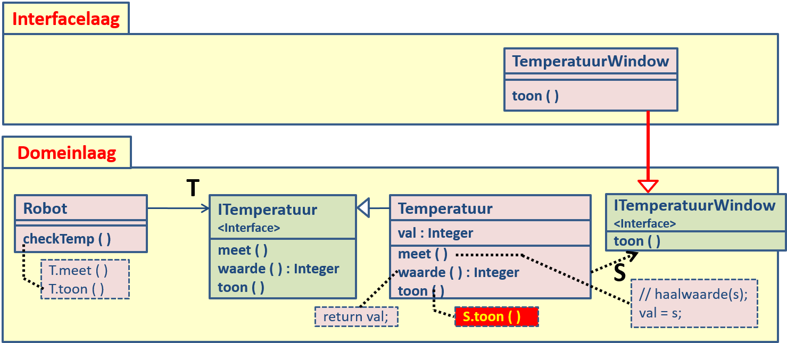
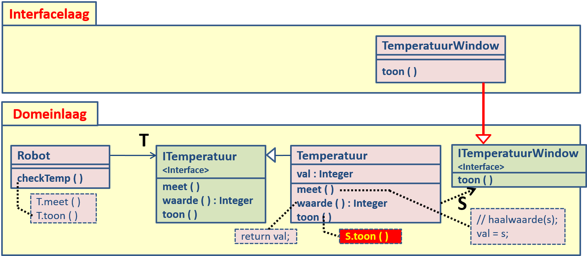

Wel onderdeel van WPFW, maar niet verplicht onderdeel van WDPROJ
- Terugblik en architecture patterns
- N-Tier architecture
- Microservices
- De Cloud
We hebben in dit semester gewerkt met het ASP.NET Core MVC framework.
Zie de populariteit.
- Veel keuzes liggen automatisch 'vast': MVC, programmeertaal is C#, ORM is EF-Core,
database is SQLServer - Kritiek: we leren alleen hoe het zit met ASP.NET Core (relativering: MVC zit in veel webframeworks)
- Kritiek: we leren teveel onnodige details over ASP.NET Core (relativering: is nodig voor het project)
We zijn een aantal design patterns tegen gekomen:
- Dependency injection
- Lazy loading
- ...
We zijn ook grotere archicture patterns tegen gekomen:
- Client/Server
-
Single Page Application (SPA)
- Thin Server Architecture: de server geeft eenmalig een stuk HTML en verwerkt daarna API calls
- Thick Server Architure: kan Stateful (weinig verkeer, veel geheugen) zijn of stateless (veel verkeer, weinig geheugen)
- Model-View-Controller, Model-View-ViewModel
- REST: betere uitleg
Herinner ook Domain Driven Design (introles): het domeinmodel staat centraal.
Herinner ook API's (les 11)
Uit het domein model (analyse) volgt het klasse model (ontwerp (met design patterns)), daaruit volgt de code (implementatie), en daaruit het data model [omdat "code-first"].
- SPA hebben we gezien bij de laatste opdracht
- . Zie wikipedia
- [Datamodel kan relationeel zijn of NoSQL, we zijn in de les tegen problemen aangelopen qua (efficient) genereren van de database (overervering...), hangt van de complexiteit af van je klasse model of de Code First slim is. Heel ver in de toekomst: misschien wordt performance wel helemaal niet belangrijk meer (en domein model daarmee belangrijker). ]
- Wat is software architectuur (SE6): ...
-
Wat is een patroon: gestructureerde specificatie van een softwareoplossing voor een klasse van gelijksoortige problemen.
- veel gebruikte en beproefde software structuren
- ontwikkelen op een hoger abstractieniveau
- herbruikbare stukjes software die de ontwikkeling versnellen
- betrouwbaarder en flexibeler systeem
- een catalogus van patronen levert ideëen voor de ontwikkeling
- documentatie beter leesbaar
-
Categorieën patronen
- analysis patterns (Type/Object, Knowledge Level)
- architectural patterns (Layers, MVC, Client Server)
- design patterns (Observer, Decorator, Facade)
- idioms (properties in C#, equals in Java)
- pattern = oplossing veel voorkomend probleem
- Beschrijving van een patroon: Naam(en), Doel, Probleemsituaties waarin toepasbaar, Oplossing, Gevolgen, Implementatie overwegingen, Varianten (eventueel), Voorbeelden
- Eerst een abstracte kijk
- Dan concrete voorbeelden
- Doel: Het lokaliseren van het effect van een wijziging in zo min mogelijk subsystemen waardoor het onderhoud wordt geminimaliseerd.
- Probleemsituaties waarin toepasbaar:
- als een wijziging in de software zich niet voort mag planten
- als gedeelten van het systeem uitwisselbaar moeten zijn
- als onderdelen moeten worden hergebruikt
- voor hiërarchisch te ordenen systemen (op basis van stabiliteit)
- Oplossing: Splits het systeem in een aantal lagen met toenemende stabiliteit. Een laag heeft geen toegang tot hogere lagen.
- 2 soorten: een gesloten archictectuur en een open architectuur
-
Gevolgen:
- Minder onderhoud: een wijziging in een laag plant zich niet voort in het gehele systeem
- Herbruikbaarheid: de afzonderlijke lagen gebruiken in andere applicaties
-
Voorbeeld 1:
- Laag 3: Presentation Laag
- Laag 2: Business Laag
- Laag 1: Data Access Laag
-
Voorbeeld 1b:
- Laag 3: Interface Laag
- Laag 2: Domein Laag
- Laag 1: Database Laag
-
Voorbeeld 1c:
- Laag 4: User Interface Laag
- Laag 3: Applicatie Laag
- Laag 2: Domein Laag
- Laag 1: Infrastructuur Laag
Voorbeeld 2:
De opdracht tot het tonen van de temperatuur moet in de domeinlaag
Het tonen van de temperatuur moet wel in de interfacelaag
 



Een heel heel heel mooi voorbeeld hier
- Monolith vs microservices
- Rebranding van Service-Oriented Architecture (SOA)
- Deel de applicatie op in kleine stukjes
- Elke microservice representeert een bounded contexts in het domein model.
- Hoe communiceren deze microservices met elkaar?
- Is een lagenstructuur nogsteeds mogelijk?
-
Waarom?
- Loose coupling, seperation of concerns, encapsulatie, hoge cohesie
- Schaalbaarheid: onafhankelijk van elkaar schalen
- Gedistribueerde software ontwikkeling: deployen en continuous integration is makkelijker
-
Nadelen:
- Communicatie is complex en traag
- Het joinen van tabellen is bijvoorbeeld vrijwel onmogelijk
- Design for failure
- ...
- Een gedistribueerde database is iets anders dan een heleboel kleine databases.
Docker is heel lichtgewicht, portable
Images / Containers
Een heel heel heel mooi voorbeeld hier
- Met API's achter HTTP
-
Of we gebruiken een messaging pattern (=klasse architectuur patterns)
- Bijvoorbeeld: de publish-subscribe pattern (=architectuur pattern)
- Deze lijkt op de observer pattern (=design pattern).
- MQTT wordt bijvoorbeeld vaak bij IoT gebruikt
Haddara, M., Fagerstrøm, A., & Mæland, B. (2015). Cloud ERP Systems: Anatomy of Adoption Factors & Attitudes. Journal of Enterprise Resource Planning Studies, 1–24. https://doi.org/10.5171/2015.521212
- Bijv. kaartjesverkoop voor U2: korte heftige piek
- Daar moet je hele serverpark op zijn ingericht
-
Als je dat zelf zou moeten hosten...
- ... zou dat een hoop kosten en
- ... zou je grote serverpark grotendeels niets staan te doen.
-
Toen Amazon Cloud introduceerde:
- Had zij kennis en expertise op het gebied van hosting (intern)
- Maakte ze al vroeg gebruik van services om aanbieders toe te voegen aan haar eigen platform
- Was er toch servercapaciteit over.
- Het hele verhaal vind je op https://techcrunch.com/2016/07/02/andy-jassys-brief-history-of-the-genesis-of-aws/
Cloud is pas cloud met de volgende eigenschappen (officiele definitie is ook goed leesbaar):
- De klant kan op elk gewenst moment zelf instellingen aanpassen
- Cloud is 24/7 en overal beschikbaar op het internet
- Resources (disc, CPU etc.) worden gedeeld met andere klanten
- Er is sprake van grote elasticiteit: de cloud-provider kan snel en zonder dat klanten het merken up- en downscalen
- De klant betaalt voor wat hij gebruikt (dat wordt 24/7 gemeten)
SAAS, IAAS en PAAS
De opdracht is om een webframework uit te zoeken en daarover te presenteren.
- Geef een demo
- Noem (minstens 3) design en architectuur patronen die zijn toegepast in het webframework
- Leg uit hoe een lagenstructuur in zo'n webapplicatie concreet wordt gerealiseerd
- Is het framework geschikt om in een microservices architectuur te gebruiken?
- Leg uit op welke manier het gekozen framework verschilt van .NET Core MVC.
- Geef voor- en nadelen van het gekozen framework.